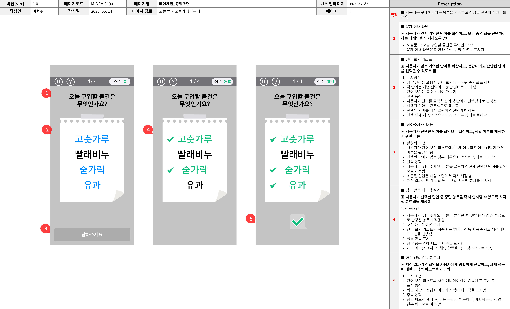
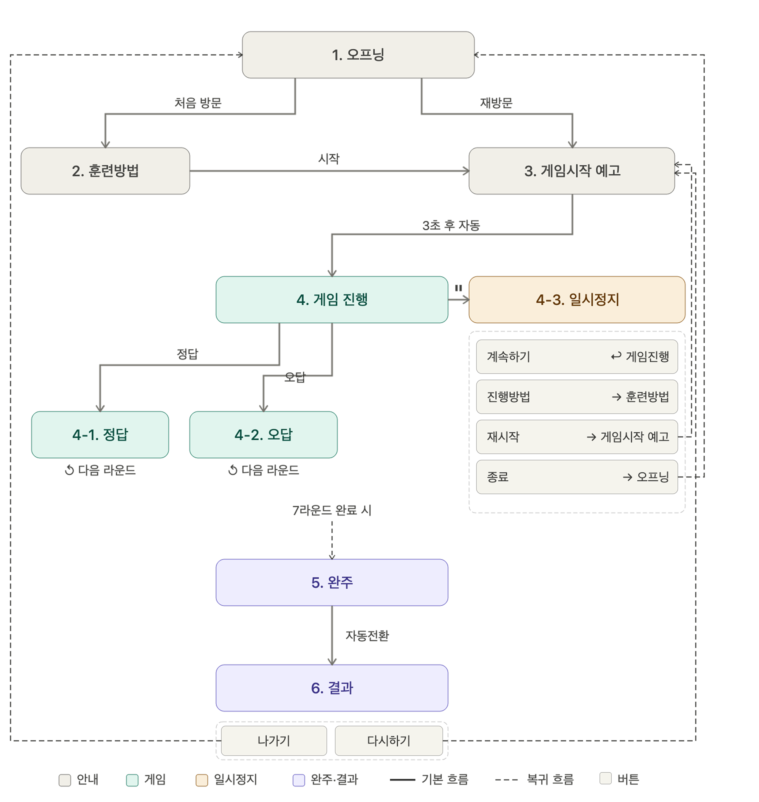

보건소 치매예방교실 B2G 시범사업의 게임형 인지훈련 콘텐츠 7종을 기획하고, 베트남 개발팀과의 협업·QA·운영 고도화를 전주기로 책임진 케이스. 5대 인지 영역 기반 콘텐츠 설계와 세션·라운드 단위 적응형 난이도 로직으로 시니어 사용자의 자발적 반복 사용을 만들었습니다.
보건소 치매예방교실은 시니어 사용자를 대상으로 하는 서비스였기 때문에, 콘텐츠의 재미뿐 아니라 인지적 부담, 사용 편의성, 화면 이해도, 난이도 조절이 모두 중요했습니다.
기존 단방향 콘텐츠만으로는 시니어의 자발적 참여를 유도하기 어려웠고, B2G 서비스 운영을 확대하기 위해서는 실제 사용자가 반복적으로 이용할 수 있는 게임형 인지훈련 콘텐츠와 안정적인 운영 레퍼런스가 필요했습니다.
또한 해외 개발팀과 협업하는 구조였기 때문에, 모호한 요구사항이나 예외 케이스를 명확한 기능명세서와 플로우차트로 정리하지 않으면 구현 오류와 일정 지연이 발생할 가능성이 컸습니다.
기억력 · 주의력 · 언어능력 · 문제해결력 · 시공간 능력 5대 인지 영역을 기반으로 시니어 맞춤형 게임형 두뇌훈련 콘텐츠 7종을 기획했습니다. 각 콘텐츠의 규칙·난이도·정답/오답 처리·제한 시간·결과 화면·피드백 문구를 정의하고 기능명세서로 정리했습니다.
베트남 개발팀과의 협업 과정에서는 화면 전환과 예외 케이스를 포함한 플로우차트를 작성하여 커뮤니케이션 오류를 줄였습니다. 정답·오답·시간 초과·재시작·종료·결과 확인 등 사용자가 경험할 수 있는 주요 경로를 사전에 문서화했습니다.
또한 시니어 사용자의 인지 부하를 줄이기 위해 테스트앱 QA를 직접 수행하고, 로직 오류·사용성 문제·UI 허들·문구 혼선 등을 확인했습니다. QA 과정에서 147건의 이슈를 도출하고 개선 사항을 정리하여 출시 전 주요 품질 리스크를 낮췄습니다.


"Organize the Socks" 콘텐츠의 난이도 로직 일부. 단일 라운드는 레이아웃(컬럼×로우) · 색상 수 · 폰트 사이즈 · 정답/오답 점수로 정의되며, 세션 진행 중에는 직전 세션 마지막 3라운드 평균 정확도 R에 따라 자동으로 Up · Hold · Down 됩니다.
| LV | Layout | Colors | Font | Correct | Incorrect | Difficulty |
|---|
이런 방식으로 시니어 사용자의 학습 곡선에 맞춰 레이아웃·색상 강도를 점진적으로 조절하고, 정답률이 떨어지면 즉시 한 단계 낮춰 좌절을 최소화합니다. 예외 규칙(예: 3×4 레이아웃에서 Color start 보정)도 명세에 포함되어 개발 단계의 모호함을 제거했습니다.
신규 게임형 두뇌훈련 콘텐츠 도입 후 자율 사용자 1인당 사용량이 전년 대비 33.5% 증가하며 콘텐츠 이용·서비스 참여 지표 개선에 기여했습니다. 보건소 기반 시범 운영 경험을 바탕으로 B2G 서비스의 운영 안정화와 유료 운영 전환을 위한 레퍼런스를 확보했습니다.
이 프로젝트를 통해 모호한 요구사항과 예외 케이스를 정책서·기능명세서·플로우차트 수준에서 사전에 구조화하는 것이 개발 리소스를 줄이고 출시 품질을 높이는 데 결정적이라는 점을 확인했습니다. 다학제 통합 헬스케어 플랫폼에서도 예약·결과 확인·AI 코칭·사후관리·운영자 관리 등 다양한 경로가 발생하므로, 복잡한 서비스 흐름을 명확한 산출물로 구조화하고 개발·디자인·운영 조직과 정렬하는 역량을 활용할 수 있습니다.